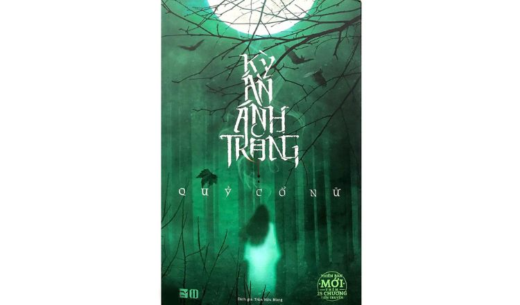
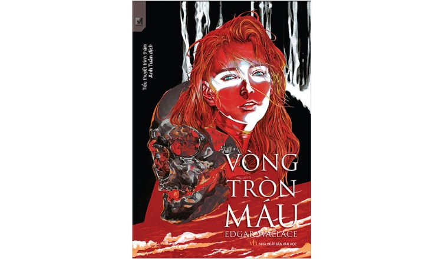

Trang chủ | Giới thiệu | Truyện Mới |Liên hệ |Quản trị bài viết
Tác giả:Dan Brown
Thể loại:Huyền Huyễn, Thám Hiểm, Trinh Thám
Trạng thái:Full
Nhắc đến những cuốn tiểu thuyết trinh thám nổi tiếng trên thế giới, chắc chắn chúng ta không thể bỏ qua một tác phẩm cực kì nổi tiếng là Hỏa Ngục của nhà văn người Mỹ - Dan Brown. Tác phẩm được xuất bản vào năm 2013 và ngay lập tức trở thành một trong những cuốn tiểu thuyết bán chạy nhất trên danh sách New York Times Best Seller.
Trong tác phẩm này, Robert Langdon bị mắc kẹt trong một chuỗi mật mã bí ẩn, được sáng tạo bởi một nhà khoa học xuất chúng. Nhà khoa học này có một nỗi ám ảnh đáng sợ về sự diệt vong và gia tăng dân số. Vì thế, ông đã tạo ra một loại virus có thể làm lây lan dịch bệnh gây chết người và giấu nó ở một nơi bí mật. Hỏa Ngục là hành trình Langdon đi qua các địa điểm trên thế giới để cố gắng tìm ra loại virus nguy hiểm và cứu thế giới khỏi sự diệt vong.

Tác giả:Dan Brown
Thể loại:Huyền Huyễn, Thám Hiểm, Trinh Thám
Trạng thái:Full
Kỳ án ánh trăng xoay quanh một sự kiện kỳ lạ xảy ra tại ký túc xá của một Trường Đại học Y nổi tiếng ở Trung Quốc. Vào ngày 16/6 hàng năm, sẽ có một nữ sinh trèo lên cửa sổ của phòng 405, khu nhà 13 và nhảy lầu tự vẫn. Sự kiện này xảy ra trong vòng 12 năm liên tiếp nhưng không một ai có thể tìm được lý do dù đã cố gắng tìm mọi cách để ngăn cản. Đặc biệt, trước khi tự vẫn, các nữ sinh này đều sẽ lẩm nhẩm rằng “Ánh trăng là gì?”. Đồng thời, họ cũng sẽ đi qua khu phẫu thuật của trường vào ban đêm. Liệu nguyên nhân thật sự của sự kiện bí ẩn này là gì?

Tác giả:Dan Brown
Thể loại:Huyền Huyễn, Thám Hiểm, Trinh Thám
Trạng thái:Full
Được xuất bản vào năm 1922, Vòng tròn máu là một tác phẩm trinh thám đã tạo nên tiếng vang lớn tại Châu Âu vào thời điểm phát hành. James Beaardmore - một triệu phú, đã nhận được thư tống tiền và cũng là “lời cảnh cáo cuối cùng” từ tổ chức VÒNG TRÒN MÁU, nhưng ông vẫn nhất quyết không khoan nhượng. Kết quả, ông đã bị sát hại ngay tại nhà mình vào ngày hôm sau. Mọi chuyện trở nên rắc rối hơn khi ngày càng có nhiều người giàu có nhận được những lá thư tống tiền, với một yêu cầu ngắn gọn: NỘP NGƯỜI HAY NỘP MẠNG. Nhận thấy mức độ nghiêm trọng của vấn đề, cảnh sát đã bắt tay vào điều tra, khám phá. Đồng thời, đây cũng chính mở đầu cho những cuộc đấu trí cân não, căng thẳng giữa VÒNG TRÒN MÁU với cảnh sát.